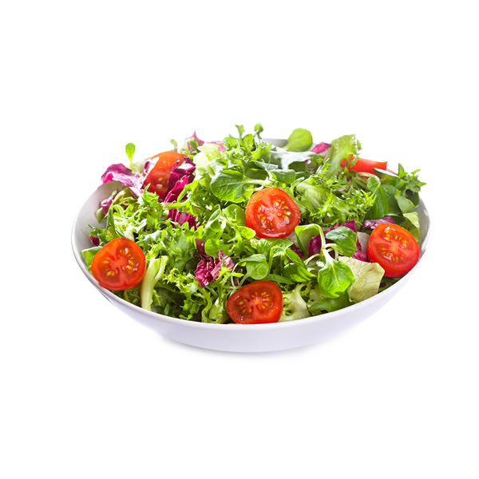

Vitajte na našom Kulinárskom webe!
Na tomto webe môžete nájsť množstvo chutných receptov a pridať svoje vlastné. Nezabudnite ohodnotiť recepty a podeliť sa o svoje obľúbené jedlá!

Čokoládový koláč

Špagety s omáčkou

Zeleninový šalát